I find myself a wanderer in a worldrapidly growing smaller. Artist,American citizen, world citizen,belonging anywhere but nowhere.
Isamu Noguchi
About Isamu Noguchi
Noguchi’s multicultural upbringing shaped his artistic identity. Born in Los Angeles to Japanese and American parents, he spent his childhood between Japan and the United States, navigating a sense of belonging to two cultures.
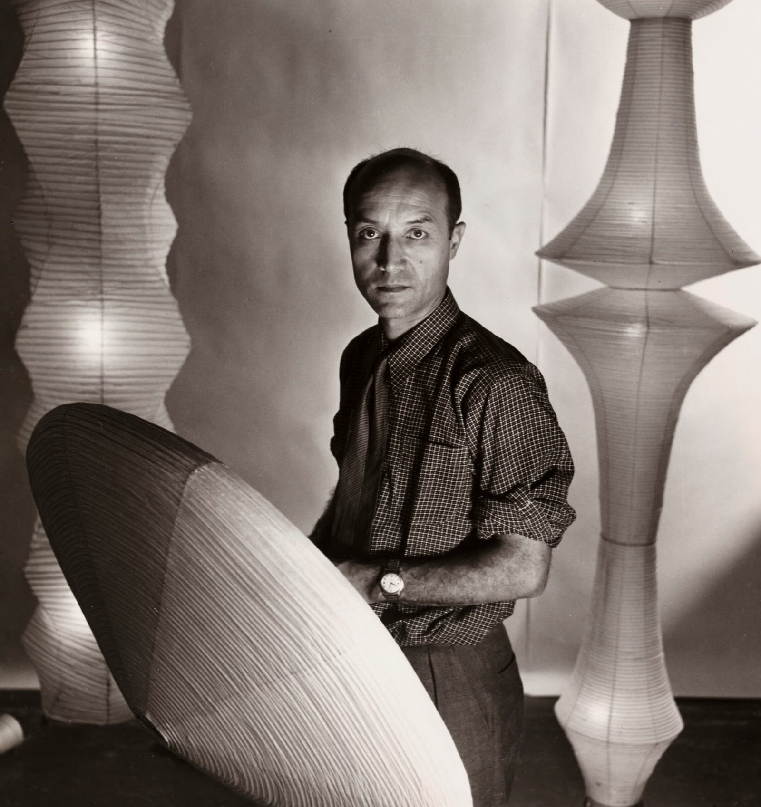
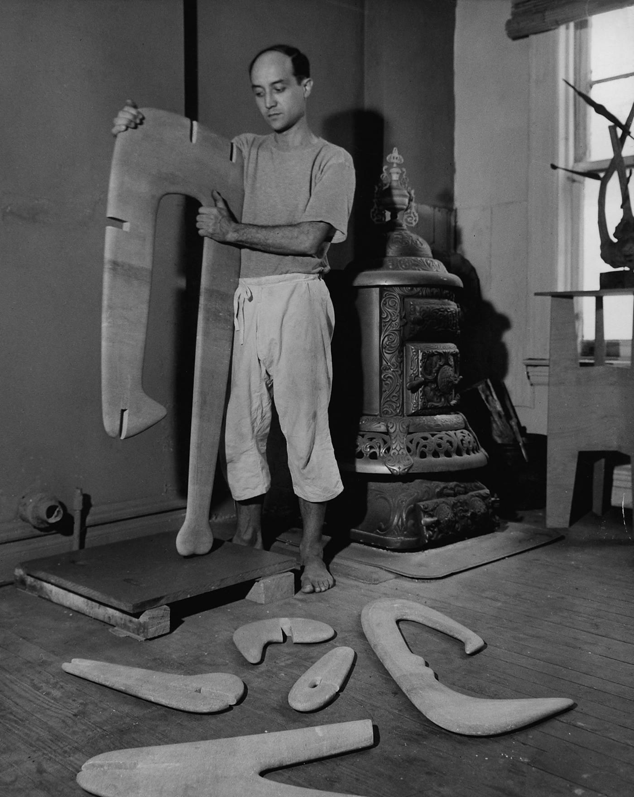
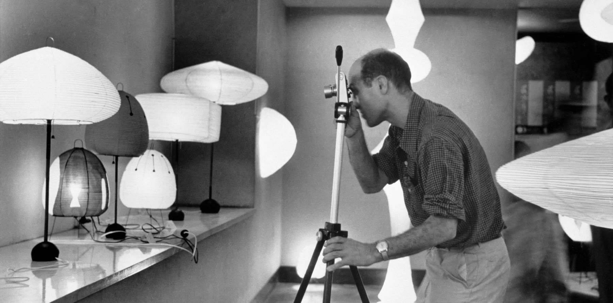
After briefly studying pre-medicine at Columbia University, Noguchi left to pursue sculpture. A Guggenheim Fellowship took him to Paris, where he studied abstraction before traveling throughout Asia. Influenced by Surrealism, modernist sculpture, and traditional Japanese aesthetics, he developed an approach that challenged the boundaries between art, design, and environment.
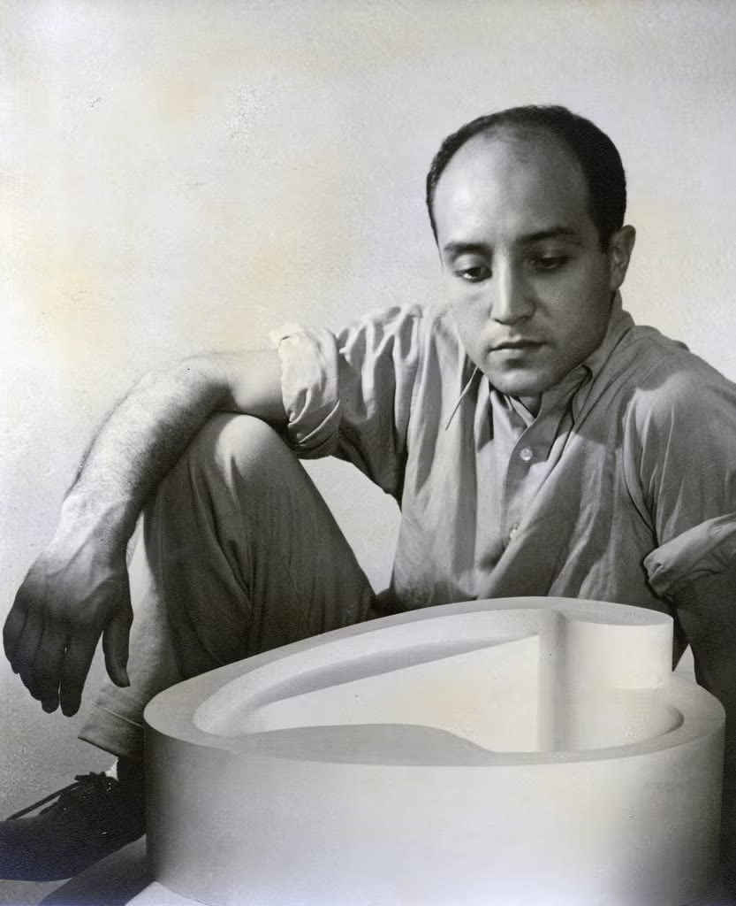
View all
works
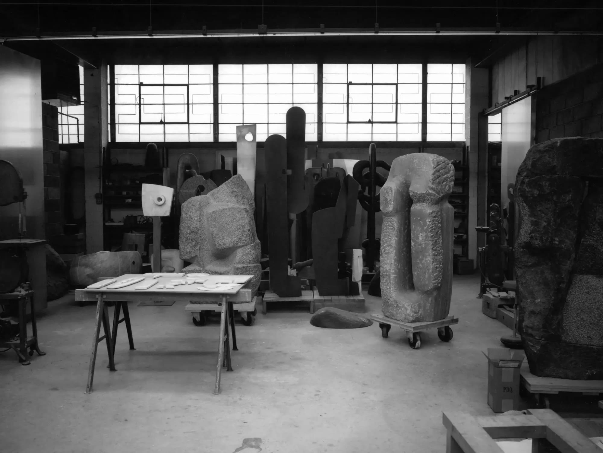
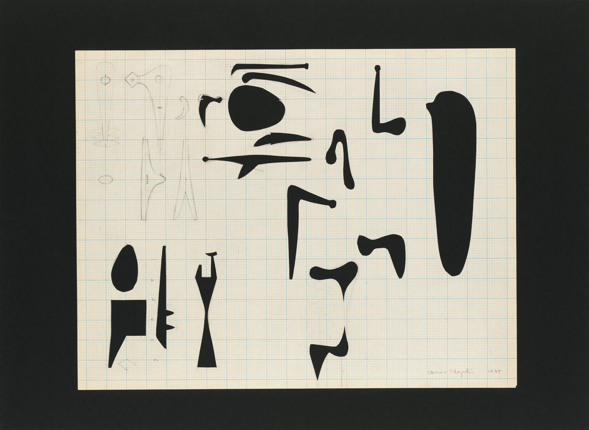
His creative process combined intuitive experimentation with an iterative approach to form-making. Throughout this process, Noguchi treated experimentation as an essential part of making, allowing material properties, spatial relationships, and unexpected discoveries to inform the final work.
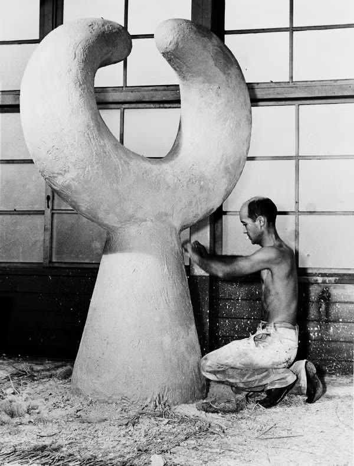
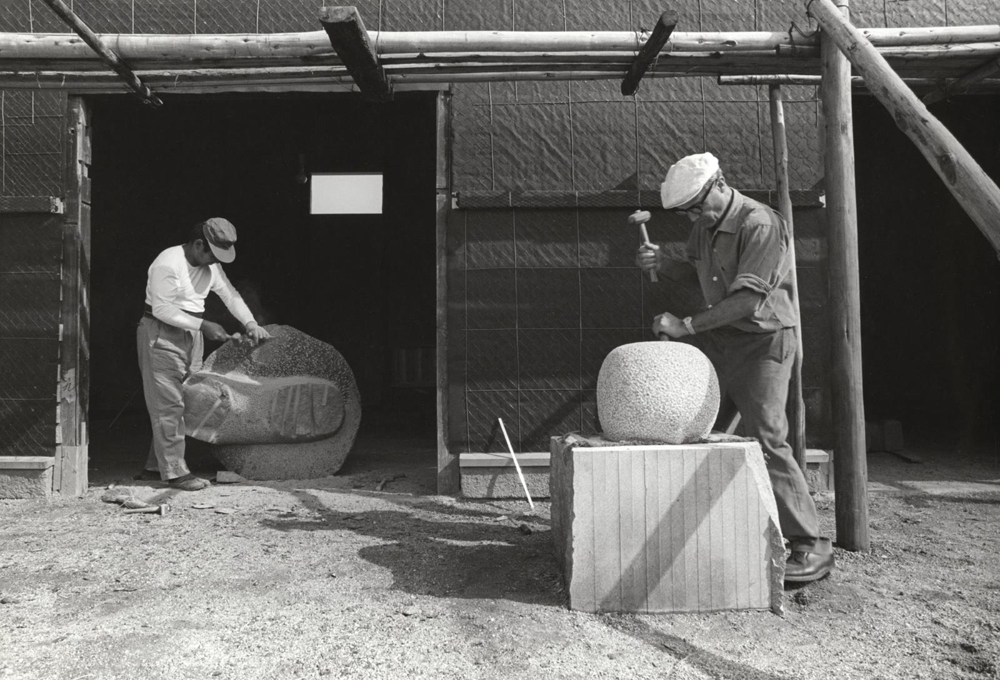
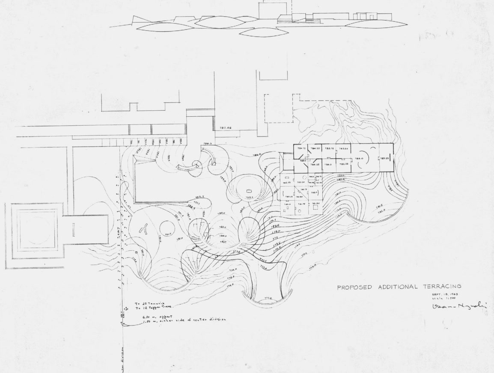
If you’re looking for yourself,and you haven’t got thefoggiest idea, isn’t it naturalthat you try everything?
Isamu Noguchi
Noguchi’s approach to artmaking was guided by curiosity and a willingness to explore unconventional methods. He allowed material properties, spatial relationships, and unexpected discoveries to shape his work, viewing each stage of the process as an opportunity for further exploration.
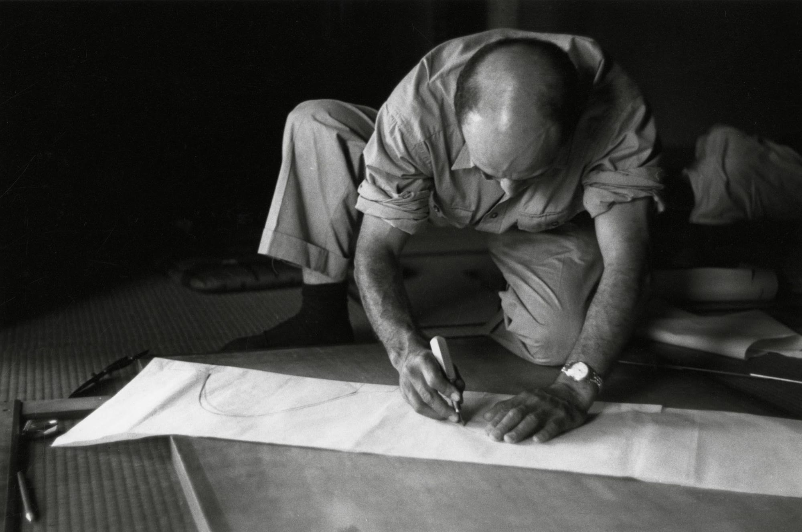
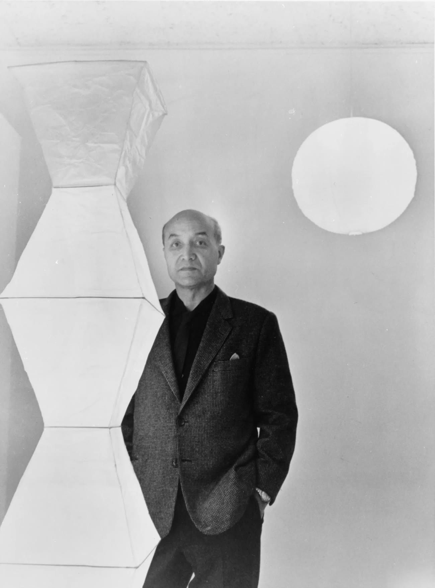
Throughout his career, Noguchi worked across an extraordinary range of disciplines and materials, from stone, marble, and metal to wood and paper. His work extended beyond sculpture to include furniture, lighting, public monuments, gardens, playgrounds, and architectural installations.
Drawing on both modernist principles and Japanese philosophy, Noguchi explored the relationship between form, space, and the natural world. His later works increasingly reflected an interest in simplicity, balance, and the integration of sculpture into everyday environments. Among his most enduring contributions is the Akari light sculpture series, which exemplifies his ability to unite traditional craftsmanship with modern design.